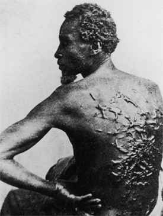
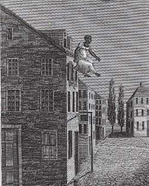
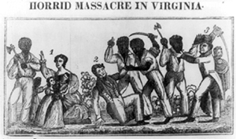
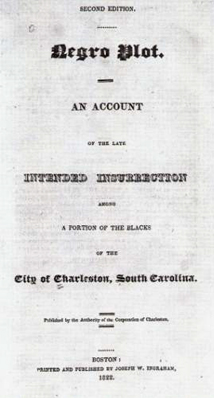

|
In the modern reinterpretation of slavery, considerable attention has been
devoted to the subject of slave resistance. Earlier observers argued that such
slave characteristics as clumsiness, slovenliness, listlessness,
destructiveness, and inability to learn indicated racial inferiority. A
nineteenth-century physician labeled such behavior a mental illness,
Dysaethesia Aethiopica. Recent studies of slavery, however, attribute
these observed characteristics to the slaves' defiant determination to resist
slavery's worst manifestations and to make the institution as livable as
possible. Slaves knew better than anyone else that, in a society where whites
monopolized power, organized rebellions against slavery were doomed to failure.
But they also recognized that they could take day-to-day action on an individual
or small-group basis, engaging in what one historian has termed "personal or
communal foot-dragging." Such resistance successfully thwarted the master's
attempt to gain total control over their lives. They were indeed "a troublesome
property," as Kenneth M. Stampp has said.
The Slave Community
The extent and success of this day-to-day resistance depended upon the
support of a strong and close-knit slave community. Despite white society's
belief that slaves were nothing more than laborers, they were in fact part of an
elaborate and well-defined social structure that gave them identity and
sustained them in their silent protest. Laborers by day, they had other roles to
play at night in the slave quarters-roles such as father, mother, husband, and
wife-roles that provided a psychological lift from their demeaning daily labor.
In the quarters, slaves expressed themselves with relative freedom from white
interference. The family structure, though subject to the master's whim, was
nevertheless strong and compensated somewhat for the personal degradation slaves
endured working in the field, house, or factory.

Slaves attend a church service in this newspaper
illustration. Often, as shown here, their owners joined the service
so as to supervise (and censor, if necessary).
|
Religion provided a similar support. By attending their own church, whether
openly or in secret, slaves fashioned a Christianity that emphasized salvation
for all peoples, slaves included, and promised rewards in the afterlife. In
church, blacks assumed leadership roles and openly expressed feelings they
otherwise had to suppress. Masters tried to use religion negatively to teach
slaves obedience and duty; slaves used it positively as an affirmation of their
self-worth and as a promise of future deliverance as a chosen people.
Their community provided slaves with the chance to be among their own people,
to express themselves, to develop their own culture, and to have control over
some portions of their own lives. These opportunities were limited and varied
greatly, but the ability to be fathers or mothers, to worship in their own
church, to take part in a communal holiday celebration, to use illicitly
gathered gossip against the master--all helped to give bondsmen the strength and
will to resist the dehumanizing aspects of their enslavement.
Nonviolent Resistance
Specific forms of slave resistance varied as much as masters and slaves
differed in their personalities and situations. The absence of a single slave
personality was, in fact, one of the frustrating facts of life for masters. Just
when they thought they knew their slaves, the slaves responded in unexpected
ways. How could the same individual be a compliant hard worker one day, a slow
moving malingerer the next, a fugitive the third? The masters were unable to
understand that slaves wore different masks at different times in their
determination to grasp whatever power or leverage they could gain over their own
lives. Many masters found such unpredictable behavior puzzling and troubling.
The essence of slavery was, of course, work, and, while there were urban and
industrial slaves, most of the blacks toiled as field hands engaged in some sort
of agricultural labor. The bondsmen worked hard not only because they were
coerced to labor, but also because they realized that a plantation's economic
failure would make their already meager existence even worse. Nevertheless,
slaves tried to work at their own pace, resisting speedups, trying, as much as
they could, to avoid being overworked. Some of the techniques they used were to
feign illness or pregnancy, break or misplace tools, mistreat horses and mules,
and fake ignorance so they would not have to learn any sophisticated tasks they
wished to avoid. When the master or overseer was not looking, slaves might hide
among the rows of cotton plants and then load their bags with rocks or sand or
wet cotton to camouflage their malingering. If an overseer tried to correct them
too harshly, they might become clumsy and destroy crops rather than tend to
them. Masters and overseers thought this kind of slave activity exasperating,
and some masters responded by planting inferior crop strains, purchasing less
efficient but more durable tools, and, in general, lowering agricultural
expectations.
When such activity failed to ameliorate a condition slaves found oppressive,
they might run away. Some proslavery theorists saw this tendency toward flight
as yet another African mental disease, calling it Drapetomania. Unless
slaves lived near free territory, or near a city where they could melt into an
urban free black population, they knew that permanent escape was unlikely.
Therefore, bondsmen were more likely to run off for a few days, perhaps to a
nearby woods, and risk punishment upon their return. Other slaves listlessly
joined in the pursuit and conspired to feed and hide a fugitive until they could
pass word that it was safe to return. Only rarely did a large group of slaves
attempt a mass escape or try to establish and maintain an extended independent
existence. (Slaves who did attempt the latter course were called Maroons.) On
numerous occasions, however, groups of runaway slaves either attacked white
slave patrollers or tried to bribe them.
Sometimes slaves could neither effectively slow down their work nor
successfully run away. Or they had specific grievances that caused them to want
to strike back at the master especially hard. Then they turned to more
surreptitious methods. Throughout the South, many slaveholders watched newly
harvested crops go up in smoke or saw a building burn to the ground from unknown
causes. This kind of slave resistance was so prevalent, or at least so widely
suspected, that as early as 1740 South Carolina passed an anti-arson law.
Thievery was another way slaves tried to make their condition more endurable.
Many slaves did not believe stealing from the master was wrong, arguing, for
example, that, when a slave illicitly ate the master's chicken, he or she was
not stealing it. The master's chicken was simply becoming part of the master's
slave and making the slave fatter and stronger to perform the master's work.
Thus, the slave was actually helping the master. The only time slaves considered
thievery to be wrong was when one slave stole from another. They were intolerant
of this or any act of resistance that adversely affected the slave community.
Slaves generally saw nothing wrong in lying to protect themselves or others.
Those who could write would also sometimes forge passes or other documents to
hoodwink their enslavers. Whether verbally or in writing, such deception became
an accepted weapon in the arsenal of slave resistance.
|

The Cat O' Nine Tails was commonly used for punishing slaves.
It tended to generate scars like the ones shown in the picture.
|
When slaves became desperate enough, they openly resisted their masters.
Numerous examples illustrate slaves refusing to accept punishment and battling
with the white man trying to administer it. Frederick Douglass, for example,
fought with a slave breaker, an individual specializing in reforming rebellious
slaves. Douglass found that the white man desisted once he realized that his
slave would resist any whipping. This experience exhilarated Douglass. "When a
slave cannot be flogged," he concluded, "he is more than half free."
Such slave resistance was rarely successful, however, because most masters
refused to tolerate it. Physically or verbally opposing a white man was
dangerous, and running away, disrupting work patterns, and destroying or
stealing property could result in similarly harsh punishment if detected. When
such resistance was too dangerous, slaves employed more subtle ways to voice
their opposition.
Slave masters consistently tried to eradicate African culture from their
slaves' memories, insisting repeatedly that slavery had rescued blacks from the
barbarism of Africa and introduced them to the superior white civilization. Some
slaves came to believe this propaganda, but the continued influence of
Africanisms in the slave community indicated slave resistance to acculturation.
Some slaves, for example, answered to an English name in the fields but used an
African name in the quarters. Sometimes they wore clothes or wore their hair
according to remembered and transmitted African styles. The slaves' lives were
filled with remnants of African culture, and their gravestones, artwork, music,
and architecture reflected this influence.
It was in music, dance, and storytelling that slaves most expressed their
African heritage and passed it along to their children. They played a wide
variety of stringed and percussion musical instruments similar to those used in
Africa. Musical tempos were based on African rhythms, and the words expressed a
defiance that whites failed to recognize as objectionable. Dances similarly were
African-inspired and also expressed an exuberant affirmation of a self-worth and
artistic creativity that masters insisted slaves did not possess.
Folktales served the same function. Slaves told stories with clear African
origins about weak humans or animals who, through native cunning, often
outsmarted their more powerful adversaries. Brer Rabbit and a slave named Old
John were the major folk heroes who entertained and encouraged the slaves.
Listening to these stories, slaves gained a fictional victory denied them in
real life. Brer Rabbit repeatedly made the seemingly more powerful Brer Fox and
Brer Bear look foolish. Stories of his activities encouraged the slaves to
believe that their own resistance might not always be fruitless.
|

This illustration shows an 1815 incident in which a woman
tried to commit suicide after her children were sold away from her. The woman
survived, but suffered a broken back and two broken arms.
|
Slaves were constantly told that the master was their "white father," and
they were his children. When an overseer proved to be particularly demanding,
therefore, the slaves appealed to their "father" directly, or they planted
suspicions about the overseer with him. Sometimes the master fired an overseer
as a result of such slave tattling, or he intervened to soften some discipline.
At the very least, any suspicion of the master toward the overseer worked to the
slaves' benefit, weakening the white solidarity against the blacks and making
efficient discipline more difficult.
When all else failed, slaves still had other means of resistance. Plantations
often had conjurers, slaves with supposed supernatural powers. Particularly
aggrieved slaves would appeal to the conjurer for a spell to punish an offending
white. Because many whites also feared conjurers, these slaves held unusual
power within their community. Their position told the slaves that not all whites
were superior to all blacks. The conjurer was the only black person regularly
able to frighten the normally dominant masters.
Sometimes circumstances became so oppressive that slaves received little
satisfaction from their usual means of resistance. Then, in their despair, they
turned on an oppressing white, or, in even further despair, turned on
themselves. Slaves sometimes assaulted whites or murdered them, using guns,
knives, clubs, and poison. Murder by poisoning was apparently so prevalent that,
as early as 1748, Virginia passed a law prohibiting slaves from handling
medicines.
Slaves also mutilated themselves to avoid work, punishment, or sale. They cut
off fingers, hands, toes, or feet, and disfigured other parts of their bodies to
make themselves less valuable slave property. Some slaves committed suicide to
escape enslavement. There is even some evidence of parents murdering their
children to keep them from having to live lives as chattels. Some newly captured
slaves from Africa believed that death would cause them or their children to
return home, a belief that provided additional incentive for suicide and
infanticide.
The resistance slaves offered to their enslavement was rarely open or violent
confrontation. Rather, it was constant, steady pressure. The main goal of
resistance was survival--to insure the most decent life possible within an
intrinsically indecent institution. Slaves rarely were able to overcome the
master's ultimate control over them, but they were able to prevent such control
from becoming total. Slave resistance, flowing out of the slave's Afro-American
culture, allowed an enslaved people to nurture the spark of freedom until it
could burst into flame during the Civil War.
Violent Resistance
In North America Afro-American aspirations for freedom from slavery rarely
found expression in collective uprisings. Although slave revolts occurred
infrequently, the slaveholders' pervasive fear of such insurrection
significantly shaped the public contours of black lives--both slave and
free--from colonial times until emancipation. Since whites created most of the
contemporary accounts of slave uprisings and conspiracies, historians have
necessarily labored with severely restricted and often biased sources. It is
impossible to know how many plans for freedom remained undetected conspiracies
or how many tentative dreams of freedom grew into murderous conspiratorial
plots. Within these limitations, however, certain patterns of revolt within
North American slavery are apparent. These contrast in important ways with slave
rebellions elsewhere in the New World.
Three distinctive types of slave revolts occurred in North America:
systematic revolts, vandalistic revolts, and situational revolts. Carefully
planned and organized, systematic revolts sought to establish autonomous black
polities--differentiating functional tasks among rebels, mobilizing insurgents
from several counties, and intending often the initial conquest of an urban
center. In contrast, vandalistic revolts, aimed at the indiscriminate
destruction of slaveholders and their property, lacked systematic preparation
and were based on the expectation of mobilizing recruits during the revolt.
Situational revolts involved groups of slaves seeking to escape from servitude
either to a free area or from deportation to an area of more repressive
servitude. Of the sixty-five North American slave revolts for which information
exists, 19 percent were situational, 27 percent systematic, and 22 percent
vandalistic. Information on the remaining 32 percent is insufficient to classify
them as either systematic or vandalistic. Thus, approximately one-fifth of North
American slave revolts can be classified as situational and four-fifths as
systematic or vandalistic. While many vandalistic and situational revolts
reached the implementation stage of insurrection, almost all systematic revolts
were intercepted during the planning phase, causing slaveholders to characterize
them as "conspiracies."
Whether regarded as conspiracy or insurrection, all three types of slave
revolts occurred throughout the history of slavery and in all slave regions of
North America. As the geographic provenance of slavery changed over time, so too
did the location of slave revolts. In the colonial period, slave revolts
occurred in the Northern colonies of New York and New Jersey as well as in the
Southern colonies of Virginia, South Carolina, and Georgia. With the virtual
disappearance of the slave system in the North, and its extension in the South
during the revolutionary period (1776-1810), slave revolts originated only in
Southern states such as Virginia, North Carolina, and Louisiana. During the
first three decades of the nineteenth century, slave revolts occurred in the
eastern seaboard slave states and in the border states. With the entrenchment of
slavery in the Old Southwest in the 1840s and 1850s, slave-revolts were recorded
throughout the slave region from Virginia to Texas.
|

White Southerners were horrified by Nat Turner's
rebllion, as this engraving illustrates.
|
Although slave revolts occurred throughout the antebellum period and in every
region of the South, the spatial clustering of revolts suggests certain societal
factors that facilitated revolts. Slave revolts were concentrated in those areas
characterized by large and impersonal plantation systems: the tobacco-growing
coastal counties of Virginia, the rice-growing parishes of South Carolina, and
the sugar cane parishes of Louisiana. Such concentration of slave revolts
discloses certain socioeconomic preconditions of slave revolts.
Slave revolts also clustered in areas near communication networks such as
cities and rivers. As slaveholders understood well, propinquity to such
communication networks provided slaves with access to cosmopolitan ideas and
information. Fears of slave unrest were high during the American Revolution,
after the Haitian Revolution, and at other times of national and international
crisis. At such times of social and political unrest, the slaveholders feared
insurrection, and sometimes their fears were realized.
To develop into revolt, however, such preconditions required catalytic
leadership. Although little information is available on black slave revolt
leaders, the three best-known insurrectionists--Gabriel Prosser, Denmark Vesey,
and Nat Turner--each had held skilled occupational positions, had exposure to
cosmopolitan ideas and experiences, and felt imbued with a sense of personal
destiny. Each believed himself to be divinely inspired and sanctioned in his
endeavor. Following capture, only Turner revealed aspects of his plans for
achieving freedom.
Throughout the slavery period the North American slaveholders reacted
consistently to slave revolts. Distinguishing between situational revolts and
other types, they sought reprisals only against the immediate offenders in
situational revolts. They responded, however, much more comprehensively to
systematic and vandalistic revolts. Within the area of revolt, an initial period
of panic among whites caused them to wreak vengeance upon innocent blacks as
well as insurgents. During this period of mob panic and activity, white
moderates within the area and outsiders who were not implicated indirectly in
the revolt sometimes also suffered from mob violence. After such an initial
period of response, a period of increased armed oppression ensued, aimed at
reinforcing the threatened slave system. Finally, a third period of reaction
followed in which legislative action was taken to prevent similar outbreaks.
Although ameliorative measures such as colonization schemes and proposals to
reduce the oppressiveness of the slave system came under discussion during
legislative debates, the invariable outcome of the legislative phase of response
was the tightening of repressive laws against blacks--both slave and free.
In the wake of major slave revolts, a secondary response occurred outside the
area of revolt. Fearing insurrection in their own neighborhoods, whites in other
areas of the South initiated aspects of the three-phased revolt responses.
Following Prosser's and Turner's rebellions, for example, repressive legislation
against blacks--slave and free--was enacted in other parts of the slave South.
Nevertheless, the actual threat Afro-American revolts posed to slavery--as some
contemporary slaveholders acknowledged--never merited the exaggerated penalties
they invoked against Afro-Americans within and outside revolt areas.
Among North American slave revolts, seven stand out either in scale or in
notoriety: three systematic revolts and four vandalistic revolts. The systematic
revolts took place in New York in 1712, in Virginia in 1800, and in South
Carolina in 1822. Of these three revolts only the one in colonial New York City
reached the insurrection stage. In early January 1712, the conspirators, who
were slaves of African birth, sealed their rebellious pact with a blood oath.
This led to a mid-April insurrection during which the rebels burned buildings
and wounded or killed sixteen whites.
|

The Vesey Conspiracy gripped the attention
of the entire nation. This account of the incident was a bestseller.
|
Although the two other notable systematic revolts--Gabriel Prosser's 1800
revolt and Denmark Vesey's 1822 rebellion--never reached the insurrectionary
phase, they are among the most celebrated North American conspiracies.
Prototypical of systematic revolts, these conspiracies aimed to establish a
black polity. Both Prosser and Vesey planned initially to gain control of a
city, Richmond in 1800 and Charleston in 1822, thereafter probably intending to
extend their hegemony over the surrounding areas. Prosser planned to spare
certain sympathetic groups of whites and hoped for aid from poor whites and
Indians. Vesey expected assistance from the West Indies and Africa. Led by
skilled artisans--one a slave, the other a freeman--both conspiracies were
betrayed by blacks more loyal to their masters than to their racial confreres.
When the insurrectionary plots were discovered, Prosser and Vesey revealed
little about their insurrectionary intentions before their executions.
The four great North American vandalistic revolts occurred in areas where
blacks significantly outnumbered whites: on the Stono River in South Carolina in
1739, in the Pointe Coupee area of Louisiana in 1795 and 1811, and in
Southampton County, Virginia, in 1831. The Stono Rebellion began on a September
Sunday when twenty slaves, many African-born, set out to kill whites. The
insurrectionists first murdered two storekeepers from whose shop the rebels
obtained ammunition and armaments. As the day progressed, the rebel group
swelled to sixty before encountering armed resistance from local whites. The
Stono Rebellion ultimately took the lives of sixty people--twenty-five whites
and thirty-five blacks.
The Pointe Coupee conspiracy of 1795 took place in an area where blacks
outnumbered whites by more than three to one. It led ultimately to the execution
of twenty-five blacks with an equal number sentenced to hard labor for at least
five years. Sixteen years later the largest insurrection in North America began
in the same area. Led by a Santo Domingan mulatto slave, between 100 and 500
slaves marched toward New Orleans, destroying plantations and killing whites
before succumbing to the superior force of the local militia. During the battle
between insurgents and militia sixty-six rebels were killed. At the subsequent
trial, twenty-two rebels were found guilty and later executed.
In Southampton County, Virginia, where blacks also outnumbered whites Nat
Turner long dreamt of an uprising in which every white person along the route
from his master's plantation to Jerusalem, the nearest town, would be killed. In
the summer of 1831, Turner and five co-conspirators set out to realize his
dream. Acquiring recruits along the way, Turner's band of rebels swelled from
six to sixty or seventy blacks at its height. More than fifty whites within a
twenty-mile area were murdered before the local white pursuers destroyed
Turner's rebellion.
These slave revolts share several qualities that underscore basic
sociopolitical and demographic elements in North American slave revolts. All
seven revolts occurred during periods of social dissension within the greater
polity--the 1712 New York revolt during the aftermath of Leisler's rebellion,
the Stono Rebellion during conflict between Spanish and British colonists, the
Louisiana revolts amidst Spanish and French antagonisms, Prosser's revolt during
a time of French and American conflict, Vesey's conspiracy after the Missouri
debate, and Turner's insurrection during rumors of war between Britain and the
United States. Such periods of social and political unrest created climates
congenial for slave revolts. They revealed sociopolitical strain and instability
within the ruling elite and suggested possibilities for social change. The five
rural revolts also were located in areas where blacks significantly outnumbered
whites. Such demographic imbalances necessarily implied not only greater social
distance between slave owner and slave, but greater opportunity for interaction
among blacks. Nevertheless, slave revolts, even if located in rural areas, had
an urban orientation insofar as the capture of an urban center was often an
initial rebel goal. The preconditions, then, for these slave revolts included
ecological factors enhancing independent solidarity among blacks and those
encouraging cosmopolitan interconnection between blacks and others.
The contrapuntal interplay between isolationist and cosmopolitan forces also
is revealed in slave revolt leadership patterns. The men who led these revolts
had experienced diverse sociocultural environments, performed skilled
occupational tasks in service to whites, and had assumed leadership roles among
blacks. The 1811 Louisiana revolt, for example, was led by a mulatto born in
Saint-Domingue. Denmark Vesey was a well-traveled slave seaman who, after buying
his freedom with lottery winnings, settled in Charleston as a carpenter. Many
New York and Stono insurgents were born in Africa. Gabriel Prosser was a
blacksmith and religious exhorter, Nat Turner was a foreman and exhorter, and
the leader of the New York revolt was a skilled craftsman.
Each slave revolt leader not only chafed at the limitations on black status
within the slave system, but developed the internal strength and charisma to
transform his personal opposition into collective confrontation. In the New
York, Prosser, Vesey, and Turner revolts, religious rituals served important
bonding functions among conspirators. With such supernatural sanctions, black
leaders and their followers felt empowered to confront the overwhelming force of
the white elite.
In a comparative sense, the scale of North American revolts was smaller than
elsewhere in the New World. Only the 1811 vandalistic revolt in Louisiana
mobilized as many insurgents as smaller uprisings in the Caribbean and Latin
America. Social preconditions for the mass revolts of Brazil, Jamaica, and other
Latin American countries included large-scale impersonal plantation systems,
significant black majorities within the population, significant preponderances
of men in the black population, large numbers of African-born blacks, and
accessible runaway slave communities. In addition to such general preconditions,
adverse economic conditions and charismatic leadership triggered insurrections.
Although the North American slave system generally lacked the combination of
social preconditions found elsewhere in the New World, North American revolts
illustrate the force of such preconditions.
Although the white slaveholding society's overwhelming physical force
ultimately doomed slave revolts to failure in the Americas, blacks everywhere
resisted enslavement. Still, realism tempered resistance. Resistance took the
form of collective opposition to the master class only where ecological
conditions favored its success. Slave revolts thus erupted more often and with
greater intensity in the Southern hemisphere than in the Northern. In North
America, moreover, slave revolts occurred most frequently in sociocultural
environments approximating those characterizing Latin American and Caribbean
slavery.
Source: Randall M. Miller and John David Smith, eds. Dictionary of
Afro-American Slavery (Westport, CT: Praeger, 1997), 635-44.
|